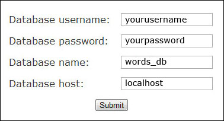

Created: 4/9/2012
By: Kennedy Rose
Email: kennedy@kennedyrose.com
Thank you for purchasing my script. If you want to quickly set up a website, just read the Quick Start Guide. The rest of this readme is just a bonus for people who are at least mildly familiar with PHP, and not necessary if you just want an "Automatic Text Rewriter" website. If you have any questions that are not answered with this help file, please feel free to email me at kennedy@kennedyrose.com.
Step 1: Create a database and import the contents of "words_db.sql" into that database. (Due to the size of the database, the script cannot do this for you. If you need help, contact your server provider.)
Step 2: Create a username and password to be associated through that database. (The script cannot do this for you. If you need help, contact your server provider.)
Step 3: Upload the contents of the /installer/ directory that came with this file to your server.
Step 4: Point your browser at the "install.php" file. Example: http://www.yoursite.com/install.php
Step 5: Fill out the form located on this page. It should look something like this:
Step 6: That's it! Just click the URL on the screen after it is stalled to see your new Text Rewriting website. If you know how to edit HTML, you can edit the template file, "template.html". For more information on learning HTML, visit this tutorial. Wherever you want the Text Rewriter to appear, just copy and paste this line of code:
<!-- text rewriter goes here -->
Note: This section, and all sections following, are intended as a bonus for those who understand the basics of PHP, and is not necessary if you just want the core Text Rewriter website. To set up your Text Rewriter website, just follow the five steps of the Quick Start Guide.
First off, to use these functions, you will need to call on the "text-rewriter.php" file. To do this with PHP, just type:
require('text-rewriter.php');
You must do this on every page that you wish to use the functions on. See the examples section for more information.
Our first function is:
synWord("word", random option)
With this we are able to find synonyms for a single word. Just replace "word" with the word you wish to find synonyms for.
"Random option" should be replaced with either a 0 or a 1. 0 Turns the random option off. While 1 turns the random option on. When the random option is turned on (1), the function will only return a single synonym of the word you supplied, randomly chosen from the database. When the random option is turned off (0), the function will return an array of all the synonyms for the word you supplied.
Example of how to: replace a word with a synonym.
Example of how to: find all synonyms of a word.
Our second function is:
synSentence("sentence, random option)
With this we are able to find synonyms for all words in an entire sentences. Just replace "sentence" with the sentence you wish to find synonyms for.
"Random option" works the same as it did with the previous function. When turned off (set to 0), the function will replace all words with synonyms, chosen at random. when turned on (set to 1), the function will return an array with a sub-array containing the original sentence and synonyms for each word.
Example of how to: replace all words in a sentence with synonyms.
Example of how to: find all synonyms for an entire sentence.
In these sections we will go over various examples of how you will go about using these functions.
Let's say we wanted to find a single synonym for the word "test". The code to do this would be:
require('text-rewriter.php');
echo synWord("test", 1);
This might (because the word is random) display:
verify
Because "verify" is a synonym of the word "test". It's that easy. You can just use the previous example and replace the word "test" with whatever you like to find a synonym.
If you would like to find all of the synonyms for the word "test", the code would be:
require('text-rewriter.php');
$synonyms = synWord('test', 0);
foreach ($synonyms as $synonym) {
echo $synonym." ";
}
The first two lines of code are the same as in the previous example, except the "1" has been changed to a "0". This turns the random option off. Which means that the function will return an array.
Displaying arrays isn't as easy as before, so we will use a "foreach" loop to display each synonym. Explaining how loops work is beyond the scope of this readme. For more information on PHP loops, see the online PHP manual. The code above would display all of the synonyms for the word "test" seperated by a single space. There are too many to list here, but the results would look something like this:
poll verify assessment prove confirm
Because all of those words can be synonyms of the word "test".
If you would like to replace all words in a sentence with synonyms (excluding basic words like "the"), you would use this code:
require('text-rewriter.php');
echo synSentence('This is a test sentence!', 1);
This is similar to the first example of replacing words, but the function is now "synSentence", which is the function for sentences. The random option is turned on (set to 1), because we want to replace all the words with randomly chosen synonyms. So this might (because the words are random) display:
This is a research pronouncement!
The first three words stayed the same, since they are basic words and have no synonyms. The last two words have been replaced with their respective synonyms.
This may get a little more complex if you are not familar with how sub-arrays (arrays within arrays) are structured. Read on if you are familiar.
Let's say you wanted to find all of the synonyms for all of the words in the sentence "This is a test sentence!"
Your code would start off looking like this:require('text-rewriter.php');
$sentence = synSentence('This is a test sentence!', 0);
It looks the same as in the previous example, but with the random option turned off (set to 0). The first value in each array is the original word. Let's say we wanted to display some results:
require('text-rewriter.php');
$sentence = synSentence('This is a test sentence!', 0);
echo $sentence[0][0]." ";
echo $sentence[1][0]." ";
echo $sentence[2][0]." ";
echo $sentence[3][0]." ";
echo $sentence[4][0];
But this would just display the original sentence, since the second value in each variable is [0]. So let's say we wanted to display the original word for the first 3 words ("This is a") and display synonyms for the last two words ("test sentence!"). Your code can look something like this:
require('text-rewriter.php');
$sentence = synSentence('This is a test sentence!', 0);
echo $sentence[0][0]." ";
echo $sentence[1][0]." ";
echo $sentence[2][0]." ";
echo $sentence[3][9]." ";
echo $sentence[4][8];
This would display:
This is a trial term!
Since we kept the second value [0] in the first three words, those words stayed the same. We changed the value for the word "test" to [9], so it chose the ninth synonym. We changed the value for the word "term!" to [8], so it chose the eighth synonym.
1.2 : Updated the demo site to find all synonyms.
1.1 : Suppressed an error that showed up when editing the stopwords array in the "config.php" file.
Thank you for purchasing this script! Remember, if you are not familiar with PHP, stick to the Quickstart Guide. The rest of the sections of this tutorial are designed for those initiated in PHP. General PHP tutorials are beyond the scope of this readme. If you would like to learn, there are plenty of wonderful resources out there. If you have questions, feel free to email me at kennedy@kennedyrose.com. Thanks again!
Kennedy Rose